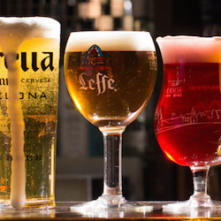

Things to do
Sunday
Christmas at Kew
Say goodbye to traditional red and green, and embrace a Winter show that will make your heart sing. Kew Gardens opens its doors once again to the festive crowd, offering a mesmerising botanical wonderland for seasonsal sighs of amazement. A fire garden, a laser show, a fairy-tale flora garden all evoke the magical wonder of Christmas, tied in with Kews oustanding surroundings. Visit with friends, or even on your own for a subdued evening drinking in the Christmas fun. A definite must have for any Londoner, even on a school night.
Location 1
Monday

Winter Festival at Southbank Centre
Want a Christmas market with a bit of class, culture and above all, less crowds? Then the Winter Festival at the Southbank Centre is for you. The hub of art and society reinvents itself into a winter wonderland, full of themed shows, musical acts, theatre groups, and more, allowing you to immerse yourself in the finer things of Christmas. As well as acts that will nourish your mind, have a wander around the authentic Christmas market, and devour the melt in your mouth fudge, delicious warm hot chocolates, all polished off with a hearty beer. And if that isn't enough, head down for a roller disco to really shake up your Santa skates. Yes. We said roller disco...Meet you there?
Location 2
Tuesday

Winter Wonderland
The epitome of Christmas in London. Perhaps not an alternative event, and maybe one that most Londoners steer well clear of...But hear us out! On a Tuesday, Winter Wonderland in Hyde Park is a gorgeous grotto full of twinkly lights and a hustle and bustle that will have you humming Mariah Carey before you can say 'Rudolph'. A mix of stalls, rides, ice skating, music, Winter Wonderland really does have it all, and away from the tourist crowds of a Saturday can be a pretty wonderful place to be indeed. We recommend booking ahead if you want a spot on the ice skating though, that rink can get busy!
Location 3